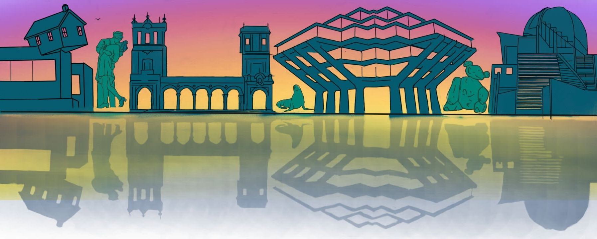
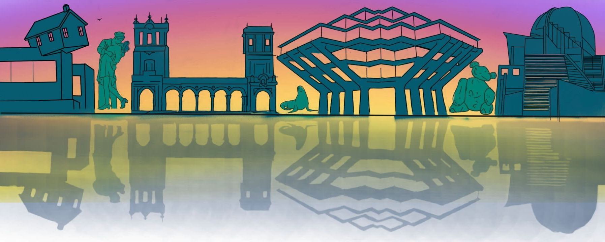
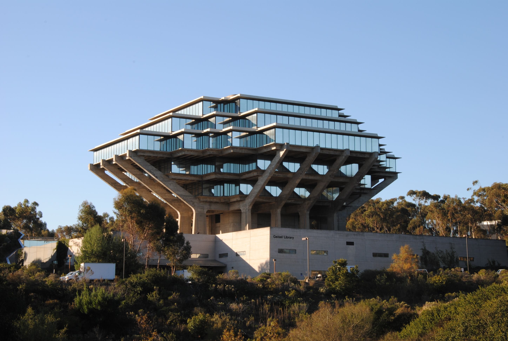
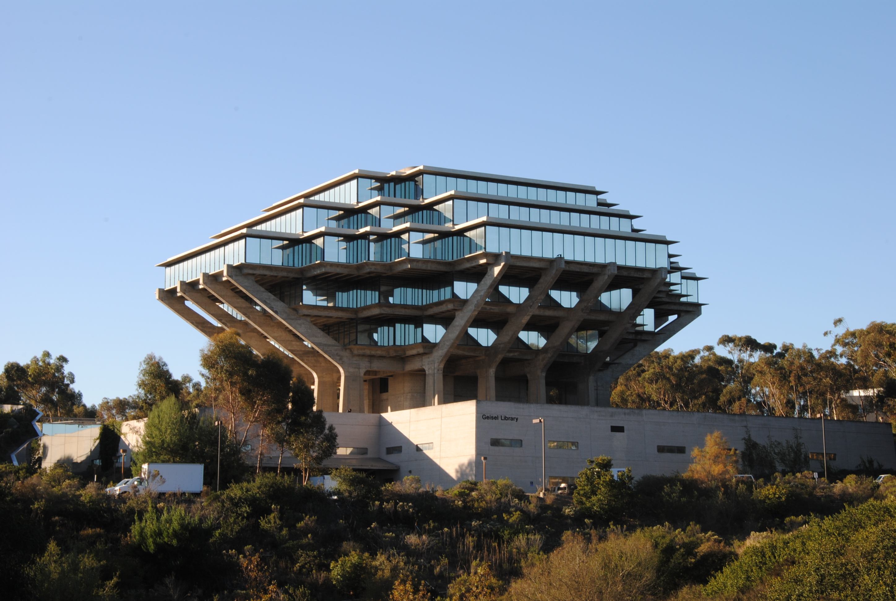
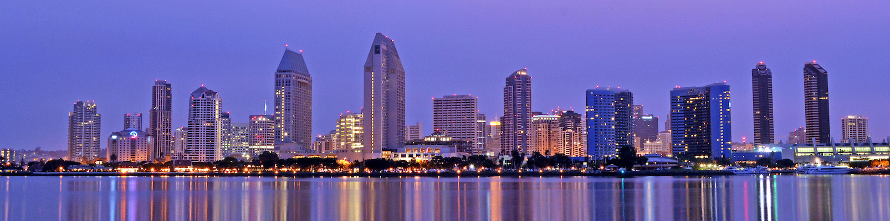
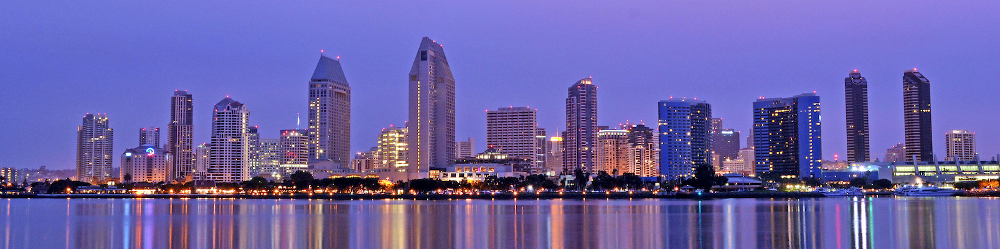

 

 

COOL STARS 22
24–28 June 2024, San Diego, California, USA
The "Cambridge Workshops of Cool Stars, Stellar Systems and the Sun" are held biennially and have evolved to be the premier conference series for cool star research.
The next edition of the Cool Stars conference, Cool Stars 22, will be held in a hybrid format (both in-person and online) in San Diego in 2024, from the 24th to the 28th of June. Please join the Google Group mailing list if you wish to have news and updates about the conference.
- early-September 2023: call for splinter sessions
- mid-November 2023: early-bird registration, deadline for splinter session proposal
- early-December 2023: travel grant requests open
- mid-December 2023: list of selected splinter sessions announced and abstract submission for main conference and splinters
- mid-January 2024: deadline for travel grant support
- mid-February 2024: abstract submission deadline for plenary talks, announcement of selected grantees, and announcement of selected plenary talks
- mid-March 2024: end of early-bird and virtual registration
- early-May 2024: end of regular registration
- early-June 2024: end of late registration and virtual registration
- mid-June 2024: opening of the hybrid platform
What is "Cool Stars"?
The next edition of the conference series "Cool Stars, Stellar Systems and the Sun" (CS 22) will be held in a hybrid format in San Diego from June 4 to 9 2024, 44 years after its first edition in Cambridge (USA). This first edition was shortly followed that same year by a workshop on "Solar Phenomena in Stars and Stellar Systems" that took place in the southern French countryside, in a small village called Bonas. Both meetings are often considered as the starting point of this exceptionally successful conference series, where approximately 500 international experts in Low-Mass Stars, Solar Physics, and Exoplanets meet every other year to exchange ideas in a cross-disciplinary and friendly environment. We will have CS 22 back in the United States, approximately as far as you can go from Cambridge but still remain in the continental USA. San Diego will be hosting the next Cool Stars, jointly between UCSD and SDSU. We will also be celebrating the creation of the newest Astronomy & Astrophysics Department in the University of California system!
SOC
To contact the SOC, LOC, or VOC write to: coolstars22sd@gmail.com
- Ruth Angus - American Museum of Natural History
- Chas Beichman - Jet Propulsion Laboratory
- Jérôme Bouvier - Institut de Planétologie et d'Astrophysique de Grenoble
- Allan Sacha Brun - Dept. of Astrophysics, CEA Paris-Saclay
- Adam Burgasser (SOC co-Chair) - University of California San Diego
- José Antonio Caballero - Centro de Astrobiología
- Jim Davenport - University of Washington
- Andrea Dupree - Center for Astrophysics | Harvard & Smithsonian
- Greg Feiden - University of North Georgia
- Clémence Fontanive - University of Montréal
- Yilen Gómez Maqueo Chew - Instituto de Astronomía UNAM
- Eileen Gonzales - San Francisco State University
- Moira Jardine - University of Saint Andrews
- Quinn Konopacky (SOC co-Chair) - University of California San Diego
- Adam Kowalski - CU Boulder | NSO | LASP
- Max Moe - University of Wyoming
- Subhanjoy Mohanty - Imperial College London
- Caroline Morley - University of Texas Austin
- Phil Muirhead - Boston University
- Eric Sandquist (SOC co-Chair) - San Diego State University
- Ricky Smart - INAF
- Beate Stelzer - University of Tübingen
- Chris Theissen (SOC Chair) - University of California San Diego
- Gerard van Belle - Lowell Observatory
- Nicole Wallack - Carnegie Earth & Planets Laboratory
- Kimberly Ward-Duong - Smith College
- Bill Welsh (SOC co-Chair) - San Diego State University
- Scott Wolk - Center for Astrophysics | Harvard & Smithsonian
- María Rosa Zapatero Osorio - Centro de Astrobiología
- ZengHua Zhang - Nanjing University
LOC
- Aneesh Baburaj - University of California San Diego
- Adam Burgasser - University of California San Diego
- Preethi Karpoor - University of California San Diego
- Quinn Konopacky - University of California San Diego
- Jayke Nguyen - University of California San Diego
- Emma Softich - University of California San Diego
- Chris Theissen (LOC Chair) - University of California San Diego
- Lingfeng Wei - University of California San Diego
VOC
- Adam Burgasser (VOC Chair) - University of California San Diego
- Jim Davenport - University of Washington
- Yilen Gomez Maqueo Chew - Instituto de Astronomía UNAM
- Ricky Smart - INAF
- Beate Stelzer - University of Tübingen
- Chris Theissen - University of California San Diego
- Nicole Wallack - Carnegie Earth & Planets Laboratory
- Bill Welsh - San Diego State University
Organizing Institutions
Sponsors
Code of Conduct
The Cool Stars 22 organizers are committed to making this meeting productive and enjoyable for everyone, regardless of gender, sexual orientation, disability, physical appearance, body size, ethnicity, nationality, or religion. We will not tolerate harassment of participants in any form. Please follow these guidelines:
- Behave professionally. Harassment and sexist, racist, or exclusionary comments or jokes are not appropriate. Harassment includes sustained disruption of talks or other events, inappropriate or unwelcome physical contact, sexual attention or innuendo, deliberate intimidation, stalking, and photography or recording of an individual without consent. It also includes offensive comments related to gender, sexual orientation, age, disability, physical appearance, body size, ethnicity, or religion.
- All communication should be appropriate for a professional audience of people from many different backgrounds. Sexual language and imagery is not appropriate.
- Be kind to others. Do not insult or put down other attendees.
Participants asked to stop any inappropriate behavior are expected to comply immediately. Attendees violating these rules may be asked to leave the event at the sole discretion of the organizers without a refund of any charge. The full Cool Stars 22 Code of Conduct is available as a PDF.
Any participant who wishes to report a violation of this policy can do so anonymously via google web form or can contact LOC representatives Preethi Karpoor or Chris Theissen (see CS 22 Code of Conduct for contact information).
This code of conduct was originally designed for an astronomy conference in London, adapted by Andrew Pontzen and Hiranya Peiris from a document by Software Carpentry, which itself derives from original Creative Commons documents by PyCon and Geek Feminism.
If you prefer to speak to someone who is not affiliated with the CS22 conference organizers, we encourage you to talk to Astronomy Allies. Several members of this group happen to attend the CS22 meeting.
Acknowledgements
- Artwork: Jennifer Matthews (IGPP) and Emma Softich
- Website template design by Veselka for andreasviklund.com
- Website development based on CS20 and CS21 website source code on github
Previous Meetings
- CS 21 - Toulouse, France, July 2022
- CS 20.5 - online, March 2021
- CS 20 - Boston, USA, July 2018
- CS 19 - Uppsala, Sweden, June 2016
- CS 18 - Flagstaff, USA, June 2014
- CS 17 - Barcelona, Spain, June 2012
- CS 16 - Seattle, USA, August 2010
- CS 15 - St Andrews, UK, July 2008
- CS 14 - Pasadena, USA, November 2006
- CS 13 - Hamburg, Germany, July 2004
- CS 12 - Boulder, USA, July 2001
- CS 11 - Tenerife, Spain, October 1999
- CS 10 - Cambridge, USA, 1997
- CS 9 - Florence, Italy, 1995
- CS 8 - Athens, USA, 1993
- CS 7 - Tucson, USA, 1991
- CS 6 - Seattle, USA, 1989
- CS 5 - Boulder, USA, 1987
- CS 4 - Santa Fe, USA, 1985
- CS 3 - Cambridge, USA, 1983
- CS 2 - Cambridge, USA, 1981
- CS 1.5 - NATO Advanced Study Institute, Bonas, France, 25 Aug - 5 Sep 1980
- The original CS (later renamed CS 1) - Cambridge, USA, Jan 1980